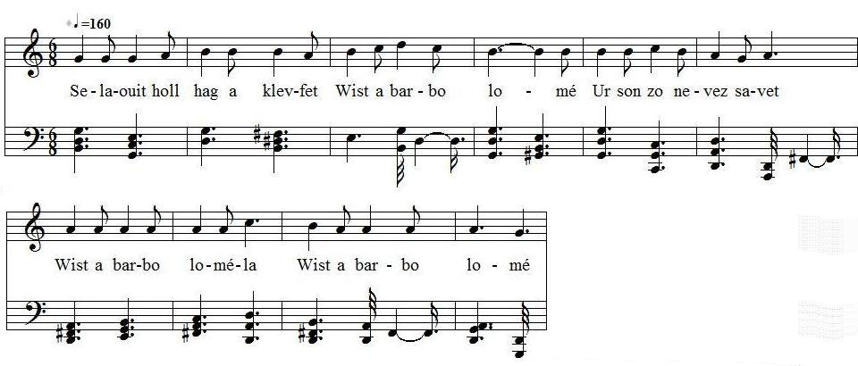

Ar breur hag ar c'hoar -Version 1
Le frère et la soeur -Version 1
Texte d'origine inconnuePublié par François-Marie Luzel dans "Gwerzioù Breizh-Izel" en 1868

Mélodie
Air publié dans "Musiques bretonnes" par Maurice Duhamel
Recueilli aurès de Maryvonne le Flem à Port-Blanc.
Il note: je ne comprends rien à ce refrain qui doit être l'altération d'une phrase française. Maryvonne Le Flem ne sait pas le français.
Arrangement Christian Souchon (c) 2009
Source: le site de M.Quentel, "Son ha ton" (voir "Liens")
AR BREUR HAG AR C'HOAR Selaouit holl hag a klevfet Wist a barbo lomé Ur son a zo nevez savet ; Wist a barbo loméla Wist a barbo lomé D'ur soudard yaouank ez eo graet, Wist a barbo lomé A oa d'an arme partiet. Wist a barbo loméla Wist a barbo lomé A oa d'an arme partiet, Hag e dad zo az-dimezet..... Pa oa e amzer achuet, D'ar gêr ez eo bet distroet. - Demat ha joa barzh an ti-mañ, Ar verc'h-henañ pelec'h emañ ; Ar verc'h-henañ eus an ti-mañ, Oa he ano Marianna ? - Aet eo du-se da dall ar stank, Aet daveti, soudard yaouank ; Hounnezh eo plac'h 'n daouliarded, Goullit, n' veet ket refuzet. - Penaos monet da dall-ar-stank, Biskoazh na on bet enni frank ! It d'an traoñ gant ar vali-c'hlaz, Hag a klevfet trouz hi golvazh ; It d'an traon gant an ale frank, Hag ho rento e-tal ar stank. - Demat deoc'h, plac'hig o kannañ ! Kannañ a ret gwenn, a gredan ? C'hwi a gann gwenn hag a wask stenn, C'hwi gannfe din ma rokedenn ! - Na gannan gwenn, na waskann stenn , N' gannfen ket deoc'h ho rokedenn - Plac'hig koant, din-me lavaret, C'hwi brestfe din daouliarded ? - O salv-ho-kras, ma iskuset, N'on ket plac'h an daouliarded ; N'on ket plac'h an daouliarded, Nag ar gwenneienn ker neubed : Me 'm eus ur breurig en pell-bro, Ha mar klevfe ho rezonioù : O ! ya, mar klevfe ho komzoù, A vreofe deoc'h ho holl vemproù ! - - Plac'hig yaouank, din lavaret, C'hwi 'n eus ho preur anavezet ? - Salv-ho-kras, siwazh ! n'am eus ket, Me oa re yaouank pa oa aet ; Me oa re yaouank em zoutou Pa yeas ma breur er-maez ar vro. Me oa yaouankik em c'havell, Pa yeas ma breurig d'ar brezel ; Me a oa c'hoazh yaouankik-mat. Pa yeas ma breur a di ma zad. - Plac'hig yaouank, din-me laret, A c'hwi a garje hen gwelet ? A greiz kalon hen goulennan, Me garje 'vije bet amañ ! Leusket ho kolvez gant an dour , Hag ho saon gant an dinamour (2) ; Hag ho saon da vonet da c'heul, Ha deut da vriata ho preur ! Ho lez-vamm a doa din laret Ez oac'h plac'h an daou-liarded, Ez oac'h plac'h an daou-liarded, Bremañ welan mat n'ez oc'h ket ! Kriz 'vije 'r galon na ouelje E-tal ar stank nep a vije, O welet ar breur hag ar c'hoar En em vriata gant glac'har ; En em vriata gant glac'har, Kouezañ raint o-daou d'an douar ! |
RAPPROCHEMENT AVEC BARZHAZ Le sujet, les retrouvailles entre un frère de retour après une longue absence et une soeur est le même que celui de la deuxième partie de "Lez-Breizh", le "Retour". The topic: the reunion after a long absence of a brother and a sister is the same as in "the Return", the second part of "Lez-Breizh". |
TRADUCTION LE FRERE ET LA SOEUR Ecoutez tous, et vous entendrez Wist a barbo lomé Une chanson nouvellement composée ; Wist a barbo loméla Wist a barbo lomé Elle a été faite à un jeune soldat, Wist a barbo lomé Qui était parti pour l'armée. Wist a barbo loméla Wist a barbo lomé Il était parti pour l'armée, Et son père s'est remarié..... Quand son temps fut achevé, Il retourna à la maison. - Bonjour et joie dans cette maison, Où est la fille aînée ; La fille aînée de cette maison, Qui avait nom Marianne? - - Elle est allée là-bas à l'étang, Allez la rejoindre, jeune soldat ; C'est la fille aux deux liards (1), Demandez, vous ne serez pas refusé. - - Mais comment aller à l'étang, Car jamais je n'y ai été? - - Descendez l'avenue verte, Et vous entendrez le bruit de son battoir : Descendez la large avenue, Elle vous conduira près de l'étang. - - Bonjour à vous, jeune fille qui lavez ! Vous lavez blanc, il me semble ? Vous lavez blanc, vous tordez roide, Voudriez-vous me laver mon gilet ? - Je ne lave pas blanc, je ne tords pas roide, Je ne vous laverai point votre gilet. - Charmante jeune fille, dites-moi, Voulez-vous me prêter des deux liards ? - Oh ! sauf votre grâce, excusez-moi, Je ne suis pas la fille aux deux liards ; Je ne suis pas la fille aux deux liards, Pas davantage la fille aux sols : J'ai un frère chéri en pays lointain, Et s'il entendait vos raisons, Oh ! oui , s'il entendait vos paroles, Il vous broierait tous les membres ! - Jeune fille, dites-moi, Avez-vous connu votre frère ? - Sauf votre grâce, hélas ! je ne l'ai pas connu, Car j'étais trop jeune quand il partit ; J'étais trop jeune, dans mon toutou (berceau), Quand mon frère quitta le pays. J'étais toute jeune dans mon berceau, Quand mon frère chéri alla à la guerre ; J'étais encore bien jeune, Quand mon frère quitta la maison de mon père. - Jeune fille, dites-moi, Voudriez-vous le revoir ? - De tout mon coeur, je le demande, Je voudrais qu'il fût ici ! - - Laissez aller votre battoir sur l'eau, Et votre savon au courant ; Laissez votre savon aller à sa suite, Et venez dans les bras de votre frère ! Votre marâtre m'avait dit Que vous étiez fille à deux liards ; Que vous étiez fille à deux liards, Et je vois clair à présent que vous ne l'êtes pas! Dur eût été le coeur de celui qui n'eût pleuré, Etant auprès de l'étang, En voyant le frère et la soeur S'embrasser avec douleur (avec bonheur); S'embrasser avec bonheur, Et tomber ensemble à terre ! Notes de Luzel 1) Fille de mauvaise vie. (2) Les chanteurs prononcent presque tous dinamour ou diamour ; mais ces mots sont une corruption évidente pour dinaoudour, composé de dinaou, pente, et de dour, eau, courant de l'eau. |
English Translation
The Siblings
|
Listen all and you shall hear Wist a barbo lomé A song, recently composed Wist a barbo lomé la Wist a barbo lomé About a young soldier Wist a barbo lomé Who had gone to the army. Wist a barbo lomé la Wist a barbo lomé He had gone to the army And his father had married again... When his duty time was over He went back home. - Good day and joy to this house!, Where is the eldest daughter? The eldest daughter in this house Whose name was Marianne? _ She's gone down to the pond. Go ahead, young soldier, She is a two pence girl (1) Ask her, you won't be rebuked. - What is the way to the pond?, I never was there, I'm sure. - Go down the grey alley You will hear her battledore. Go down the broad alley And you cannot miss the pond. - Good day to you, lass who are washing, Washing and bleaching, aren't you? |
Bleaching white and wringing tight Would you mind washing my waistcoat? - I don't bleach white, I don't wring tight, And I won't wash your waistcoat. Bonnie lass, tell me Would you lend me two pence? _ With your leave, Sir, I won't I am not a twopence girl. Neither a twopence girl am I Nor a two pounds girl. I have a dear brother far away, If he heard you thus speaking, O, if he heard the words you say, He would crush your arms and legs! - Tell me, lass, Did you know this brother of yours? - With your leave, alas, I did not. I was too young, when he left. Too young, still in my cradle When my brother left our country. I was but a baby in my cradle When my dear brother left to war. I was so young at the time When my brother left our father's house. |
_ Tell me, lass, Would you be pleased to see him again? - I wish to God I would If only he were here! - Abandon your battledore to the water And your soap to the stream! Let them go with the stream (2) And come in your brother's arms! Your stepmother told me That you were a twopence girl; That you were a twopence girl But now I clearly see that you are not!- Hardhearted were whoever was By the pond and who had not cried Seeing the siblings, reunited Hugging each other in joyful pain. Hugging each other with delight Until they fell onto the ground! Notes by Luzel (1) strumpet (2) Nearly all singers pronounce "dinamour" or "diamour" a word combining "dinaou", slope and "dour", water, stream |

Le Frère et la soeur - Version 2 -Mélodie 2
Le Frère et la soeur - Version 2 Mélodie 3
Retour à "Lez-Breizh" du Bazhaz Breizh